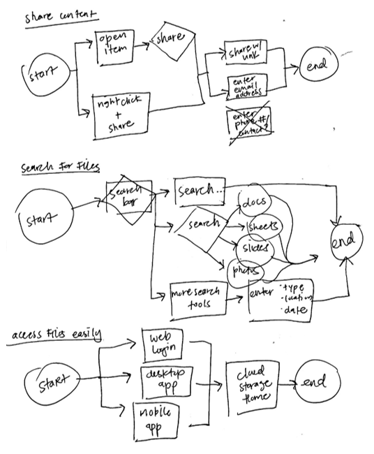

Create & Share with MyCloud

MyCloud is a new cloud storage and content creating app that allows easy access, refined organizational features, and provides a safe place to store files. It is the central hub for managing work and/or school assignments, creating and delivering projects, and sharing content with peers and colleagues. Our idea behind this app was to offer a modern, sleek design to help professionals streamline work processes.
Problem
- 1. Users are having a hard time knowing how to access their cloud storage
- 2. Users need a tool that can collaborate more universally
- 3. Users want to organize content in a more effective way
- 4. Users have a hard time locating files
Solution
Once we asked users about the kind of issues they were encountering and what was still needed, it became evident that they were frustrated with organizing and locating files. I focused on creating this app with a modern edge to cater to those users who needed an all-encompassing, user-friendly and highly organizable app that could help business professionals and students with managing files, creating content, and collaborating with peers to deliver clean, impressive projects.
Process
When asked users what some issues they encountered were when categorizing content, their responses (in percentages) were the following:
Competitive Analysis
Google Drive’s edge is that it’s easily accessible via web, encompasses sheets, slides and docs, and offers real-time collaborative features. It offers Google Backup and Sync, allowing users to be able to set certain folders to constantly sync onto their Google account's Drive.
Dropbox’s edge is that it brings files together on the user’s computer and syncs it with other computers and devices. It offers Dropbox Paper, a collaborative document editor, advanced sharing controls, remote wipe, etc.
OneDrive’s edge is that it saves files and photos and can be accessed any device, anywhere. It also offers real-time collaboration and with Office 365 there are more productivity tools.
User Stories
- I want to upload files, i.e. docs, spreadsheets, slides
- I want to create files, i.e. docs, spreadsheets, slides
- I want to organize my content
- I want to share content via email
- I want to access my content easily
- I want to search for/through files
- I want to save content, i.e. links, images
- I want to share content via link
- I want to access content via desktop and mobile
- I want to set up the app on my PC
User Flows to Wireframes
Our user flows break down the processes that are already working in the market. Uploading, creating, and organizing content should be intuitive and familiar. Essentially, we wanted to combine all the functions that already work well for users, so they know exactly what to do when they use MyCloud.
The transition from user flow to wireframe was almost seamless, as it was pretty clear what users were used to seeing on their dashboard and what worked for them: one button for adding and creating a piece of content—one place to make something new and amazing to share with the world. One place to upload and store files, that was easily accessible, fast, and friendly. We wanted this to be the central hub for all your important files.
Wireframes to High-Fidelity Mockups
Referencing our moodboard and MyCloud’s style guide, we developed the high-fidelity mockups with emphasis on consistency and functionality. The addition of icons, buttons, color and graphics did not only bring the app to life but greatly improved user experience. Using the feedback from the initial round of usability testing with the wireframes, we decided on what to add/remove, overall hierarchy, placement of call-to-actions, etc., and did further research with our competitors for direction on page layouts.

Branding
While there was a risk in it being redundant, I couldn’t help but incorporate a cloud as part of the logo. After all, it was a cloud storage app, and I felt like this would successfully convey the versatility of MyCloud and truly match its brand. It was important for the logo to symbolize the three content-creating apps that MyCloud had to offer. Using the rainbow design helped tie together the 3 elements/features, while the color palette helped it look more sophisticated, unlike a traditional rainbow. With the idea to be minimalistic but meaningful in mind, MyCloud’s logo was born:
Refinement & Moodboard
.jpg)
This moodboard represented the feel and direction for MyCloud. While there is a unique arrangement of elements and burst of color, there still is an orderly fashion to it. This would influence the typography for the app, two sleek and simple sans serif typefaces to harmonize with the app’s youthful and playful vibe. Using this moodboard as inspiration guided MyCloud’s brand and visual design.
The three colors of the rainbow logo symbolize the MyCloud apps: Notes, Sheets and Slides. Our core colors are: Pumpkin, Sea Serpent and Sunglow. Text should always be set in Taupe Grey. Black should never be used.
Usability Testing
In Round 1 of usability testing, users were told to 1) sign up for an account, 2) add a piece of content, and 3) organize a piece of content.
In Round 2 of usability testing, users were told to 1) add a piece of content, 2) organize a piece of content, and 3) share a piece of content.
From this round of testing, I discovered the importance of highlighting, selecting, right-clicking, and dragging. Even though the users understood my concept of using the checkboxes, we agreed that clicking on it as a way to select or highlight one or more files was the best way to go. Also, moving things in bulk would be easiest by clicking and dragging or holding down CTRL. I could also tell that the action buttons across the top could be put to good use if we refined the concept of selecting files. Therefore, I decided to remove the checkbox feature on the dashboard and implemented a new, more forward method to selecting files:
Conclusion
Although I initially had doubts on how we could improve the current cloud storage and content creating apps in the market, it was clear that students and business professionals were seeking from a storage app better organizational features, advanced search tools and easy accessibility.
What worked?
What worked well was the layout and hierarchy of the app. Throughout testing, our users were quick to find call-to-action buttons and complete the requested tasks. Including different ways to complete the tasks were helpful as well.
What I learned
I learned that users really value convenience, i.e. signing up via Google, and that being able to access/edit files on the go was very important. Knowing this, I would prioritize making the mobile app highly usable if there were a next phase of the project. Moving forward, I know to include the option to sign up via other accounts and across all devices.